AnyPortrait > マニュアル > マテリアルライブラリ
マテリアルライブラリ
1.6.0
v1.1.7から適用される機能です。AnyPortraitの基本的なレンダリング目的は、「光が適用されず、イラストの元の色を表現すること」です。
しかしながら、プロジェクトに応じて、キャラクターが光の影響を受ける必要もあり、ユーザーが作成した「Shader」に実装された様々な効果が適用されることが必要でもあるでしょう。
AnyPortrait v1.1.7に、これらのユーザーのニーズを満たすための機能が追加されました。
「マテリアルライブラリ（Material Library）」を利用して、様々なマテリアルを設定してBakeをすることができ、マテリアルの初期値を設定することも可能です。
また、頻繁に使用される「マテリアルセット（Material Set）」をプリセットとして保存して、これを他のキャラクターに簡単に適用することもできます。
マテリアルライブラリからマテリアルセットを作成して適用

「Directional Light」、「Point Light」が配置され、「Ambient Color」が黒より明るく設定されたユニティシーンです。
このとき、基本的な方法でBakeされたAnyPortraitで作成されたキャラクターが過度に明るく表示される問題が発生します。
以前は、このような場合は、ユーザーが作成した「Shader」をいちいちメッシュに適用する方法で問題を解決していました。
（関連ページ）

AnyPortraitエディタを開きます。
(1) 「ルートユニット」を選択します。
(2) エディタの上部に追加された「Material Library」ボタンを押します。
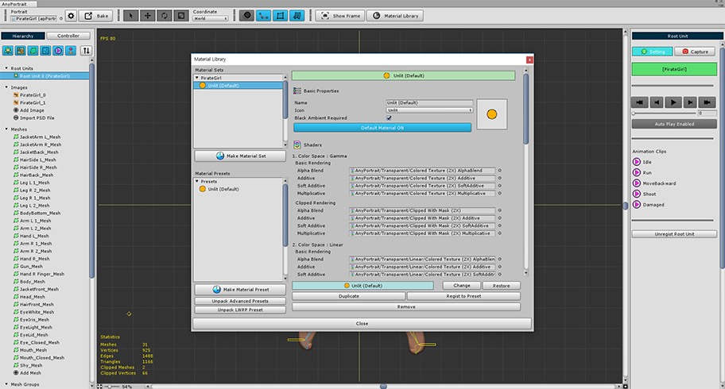
「マテリアルライブラリ」ウィンドウが開きます。
マテリアルライブラリは、「マテリアルセット」を作成して変更することができる機能です。
（マテリアルライブラリのインターフェイスの詳細については、このページの下で見ることができます。）
条件に応じて、他のShaderが適用されます。
したがって、複数のShaderを1つのグループにまとめて管理する必要がありますが、これを「マテリアルセット」で呼ばれます。
いくつかのShaderが適用されるかについての条件は、次のとおりです。
- GammaまたはLinearカラースペース
- クリッピングするかどうか
- 4つのブレンド方式
そしてクリッピングメッシュのための「Alpha Mask Shader」を含みます。
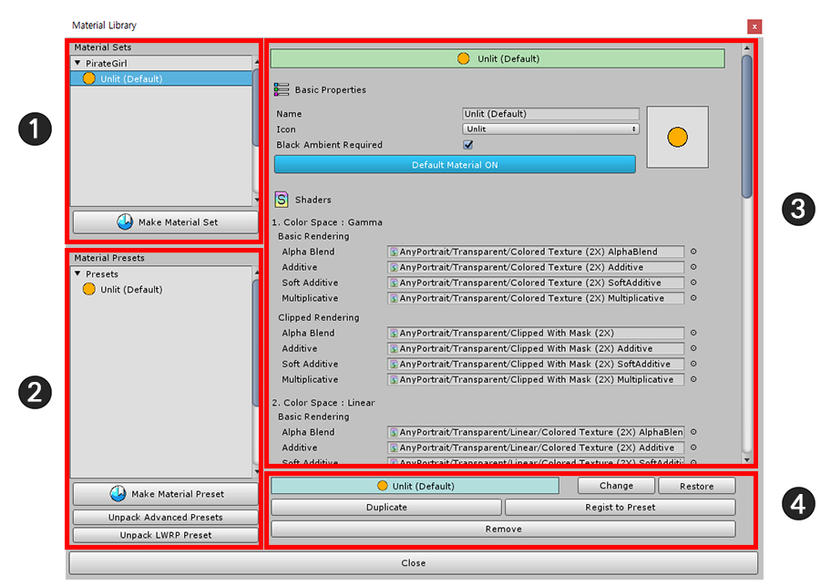
「マテリアルライブラリ」は、上記のように構成されます。
(1) マテリアルセット：現在のキャラクターに保存されたマテリアルセットが表示され、マテリアルのセットを生成することができるボタンがあります。
(2) プリセット：他のキャラクターにも適用するために一般的に共有されているプリセットが表示されます。プリセットを作成したり、予め指定されたパッケージからプリセットを作成することができるボタンがあります。
(3) マテリアルセット属性：選択されたマテリアルセットの属性があります。名前とアイコン、Shaderとマテリアルのプロパティなどを設定することができます。
(4) マテリアルセットの編集機能：プリセットと接続して値を同期したり、他のマテリアルのセットを複製する機能などが提供されます。

現在は、デフォルトの「Unlit」プリセットのみです。
パッケージの形で提供されているプリセットを設置しましょう。
(1) 「Unpack Advanced Presets」ボタンを押します。
(2) パッケージがインストールされると、マテリアルライブラリを再起動する必要があるというメッセージが表示されます。
OKボタンを押すと、マテリアルライブラリが終了され、パッケージがインストールされます。
インストールが終了すると、再マテリアルライブラリを開きます。

現在、多くのマテリアルセットプリセットがインストールされます。
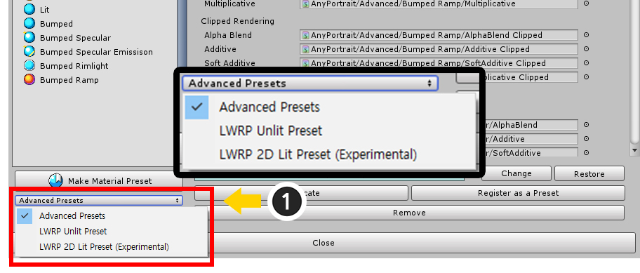

v1.1.8からプリセットを選択するためのボタンが変更されました。
(1) インストールしようとする「プリセット」を選択します。
(2) 「Unpack Preset」ボタンを押すと、選択されたプリセットが選択されます。
- 「LWRP Unlit、LWRP 2D」プリセットの説明は、「関連ページ」を参照してください。
- 「VR」プリセットの説明は、「関連ページ」を参照してください。
- 「Keep Alpha」プリセットの説明は、「関連ページ」を参照してください。
- 「URP」プリセットの説明は「関連ページ」を参照してください。
v1.3.5では、互換性と最適化のための次のプリセットが追加されました。
- 「Unity 2021」以降のバージョンで「URP」を使用したい場合は、「URP（2021）」プリセットを「URP」プリセットの代わりにインストールしてください。 （関連ページ）
- マテリアルをマージする機能を使用したい場合は、「Mergeable」プリセットをインストールしてください。 「URP」環境でマテリアルをマージしたい場合は、代わりに「URP（2021）」プリセットをインストールしてください。 （関連ページ）

続いて、新しいマテリアルのセットを作ってみましょう。
(3) 「Make Material Set」ボタンを押します。
(4) マテリアルのセットを簡単に作るためにプリセットを選択することができます。この段階では、「Lit」プリセットを選択してみましょう。
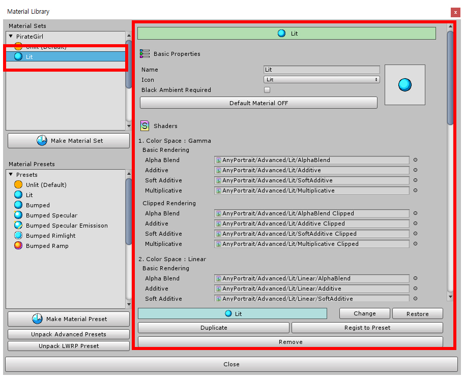
新しいマテリアルセットが生成され、その属性は「Lit」プリセットに基づいて自動的に作成されます。

まだこのマテリアルセットは作成のみされただけで、実際に適用されていない状態です。
生成されたLitマテリアルセットがデフォルトにならなければBakeをしたとき、実際に適用されます。
(5) 「Default Material」ボタンを押してLitマテリアルセットがデフォルトになるように設定します。
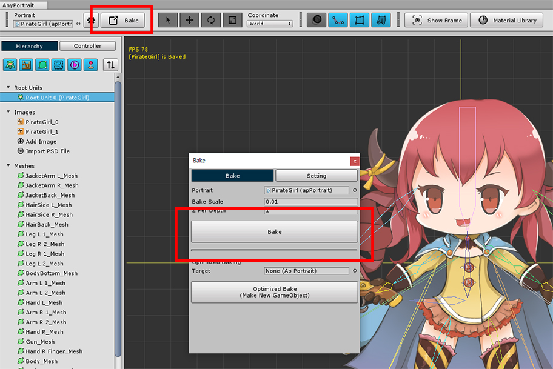
AnyPortraitエディタでは、マテリアルによるレンダリングをサポートしていません。
Bakeを実行して、ユニティシーンでどのように表示されるか確認してみましょう。
「Bakeダイアログ」を開き、「Bakeボタン」を押します。

今、さまざまな光のため、きれいに表示されるキャラクターを見ることができます。
マテリアルプリセットを利用した様々なレンダリング
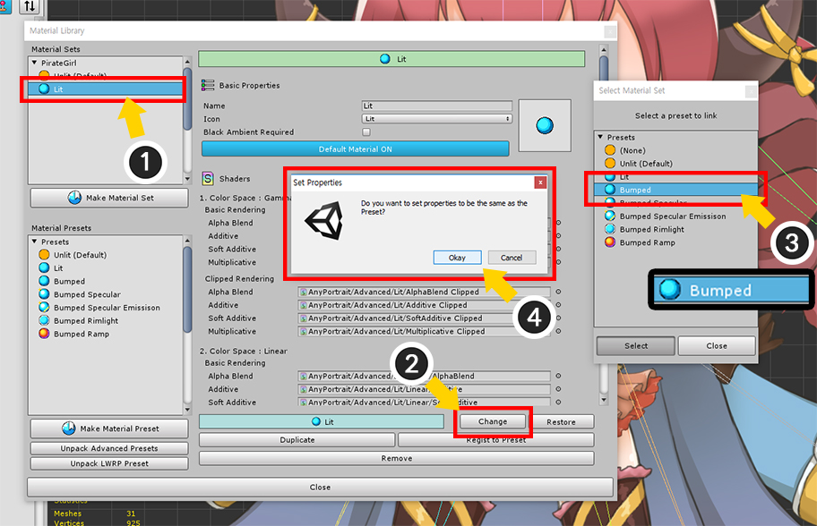
「Lit」プリセットのほか、様々なマテリアルプリセットが提供されます。
このマテリアルを一つずつ用いてレンダリングをしてみましょう。
(1) 先に作成された「Lit」マテリアルセットを選択します。
(2) 「Change」ボタンを押します。
(3) 他のプリセットを選択して同期することができます。今回は「Bumped」プリセットを選択してみましょう。
(4) 選択されたプリセットと同じになるよう属性をすべて変更するか尋ねます。 OKボタンを押します。
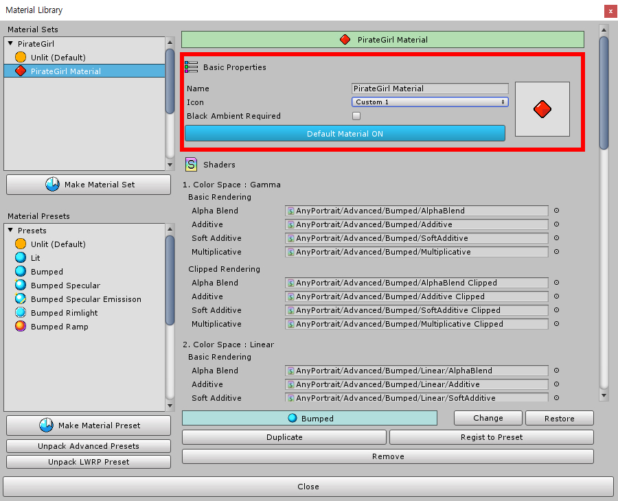
「Bumped」プリセットの属性と同じようにマテリアルセットの属性が変更されました。
マテリアルセットの名前とアイコンなどを変更することができます。
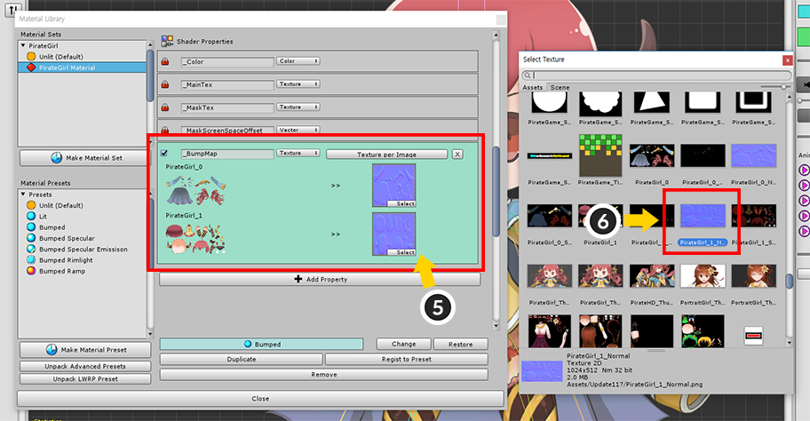
Bumpedマテリアルは「ノーマルマップ」（または「バンプマップ」）を必要とします。
マテリアルのプロパティに「ノーマルマップ」を入力しヘジュオヤします。
(5) マテリアルセット属性領域をスクロールすると、下部に「マテリアルプロパティ」があります。ここで「_BumpMap」プロパティに「ノーマルマップ」を適用する必要があります。
(6) 「ノーマルマップ」は、一般的に青のテクスチャで作成され、外部のツールを利用して、ユーザーが直接作成します。
参考
このページでは、「ノーマルマップ」のようなテクスチャを作成する方法については説明しません。
「2D Normal Map」のキーワードで検索をすると、さまざまな製作方法が紹介されます。
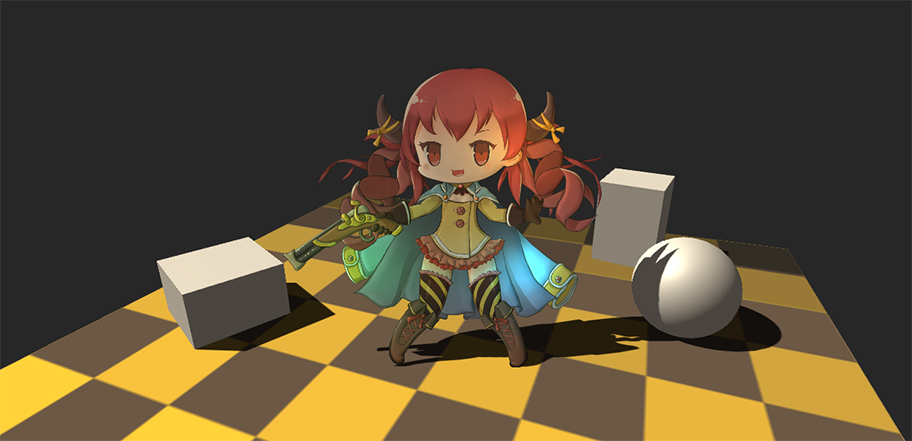
「Lit」マテリアルと似て見えるが、そこに体積感が追加されたレンダリング結果を見ることができます。
ほとんどのライティングは、「ノーマルベクトル」を必要とするので、以下のすべての材料は、「Bumped」マテリアルをベースに作成されました。

今回は「Bumped Specular」マテリアルを適用してみましょう。
上記の説明と同じ手順でプリセットを選択して適用します。
(1) 「Change」ボタンを押します。
(2) 「Bumped Specular」プリセットを選択します。
(3) マテリアルプロパティ項目に「_SpecularPower」と「_SpecularMap」プロパティが追加されました。
「_SpecularPower」プロパティは、「SpecularのShininess」を計算する累乗です。数字が大きければ小さく鮮やかな反射光が表示されます。
「_SpecularMap」プロパティは、「Specular」の計算に使用されるテクスチャです。ここで適用されるテクスチャの「RGBチャンネル」は、「プラス式」に適用される「Specularの色」を意味し、「Alphaチャンネル」は、「_SpecularPowerに乗じなるパラメータ」を意味します。
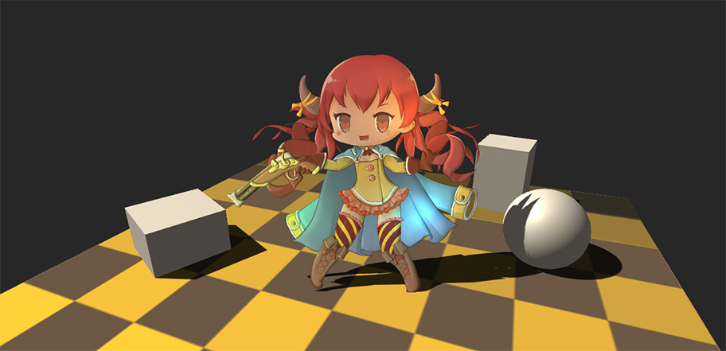
光の方向に応じてキャラクターがさらに輝くことを見ることができます。
（一般的には「Specularの世紀」は、光の方向とカメラの向きに応じて変わるが、AnyPortraitで作成されたキャラクターは「Billboard」方式で動作するため、残念ながらSpecularの効果が大きくない。）
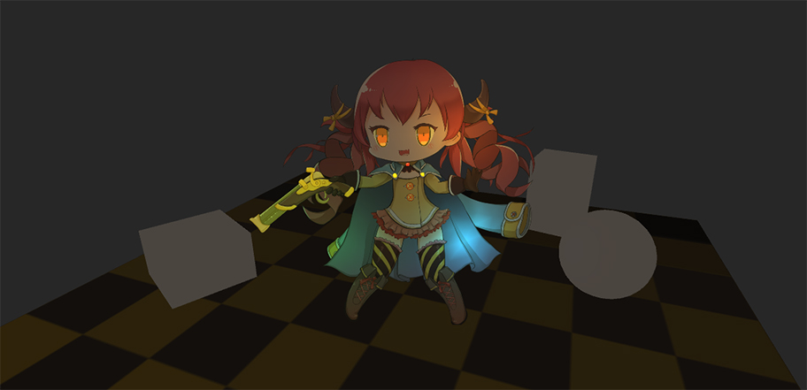
同じように、「Bumped Specular Emission」マテリアルを適用してみました。
Emissionマテリアルは、自己発光の効果が加わるのが特徴です。
（瞳と銃、服の金属部分が明るく表示されたことを見ることができます。）
このマテリアルは、次の二つのプロパティが追加されます。
「_EmissionMap」プロパティは、「発光される色（RGB）の情報を持つテクスチャ」です。レンダリングでは、「プラス式」に適用されます。
「_EmissionColor」プロパティは、「_EmissionMapに乗算色」パラメータです。
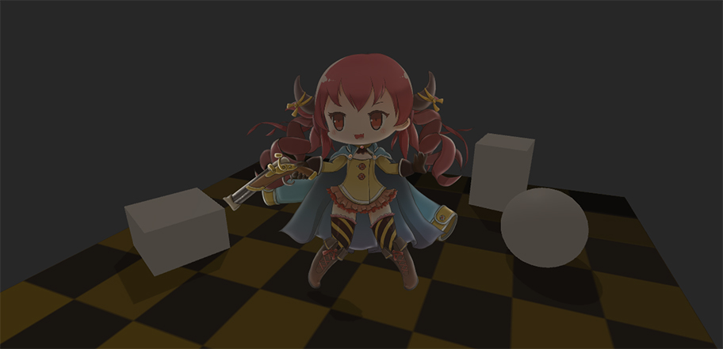
「Bumped Rimlight」マテリアルもかなりきれいなレンダリング結果を示しています。
「リムライト（Rim Light）」は、背面からの反射光を表現した手法です。
次のプロパティが追加されます。
「_RimPower」は「リムライトのサイズ」を設定するプロパティです。乗方式で適用されるので、値が小さいほど広く表示されます。
「_RimColor」は「リムライトの色（RGB）」です。 「プラス式」に適用されます。
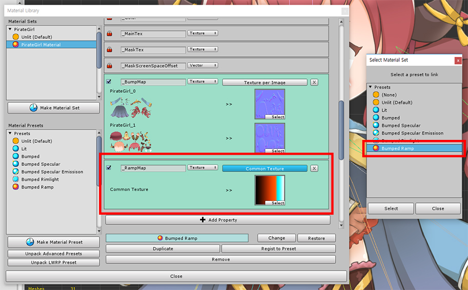
「Bumped Ramp」マテリアルは、最も特別な結果を示す興味深い材料です。
ライティング方法を「Gradient Map」に指定することができます。
「_RampMap」プロパティに「Gradient Map」を適用します。
このテクスチャは、画像ごとに指定する必要がないので、テクスチャプロパティの方式が「Common Texture」であることを見ることができます。

「Bumped Ramp」マテリアルを使用して、かなり人為で印象的なレンダリング結果を作成することができます。
「Custom Shader」が適用されたマテリアルセットを作成
ユーザーが作成したShaderを利用して、マテリアルを作成することができます。
このページでは、作成された単純なエフェクトのShaderをマテリアルセットに入れて適用してみるのプロセスを説明します。
（ここで説明されたShaderアセットはAnyPortraitパッケージに含まれていません。）

既存のマテリアルセットから複製して新しいマテリアルのセットを作ってみましょう。
(1) 現在使用中のマテリアルのセットを選択した後、「Duplicate」ボタンを押してマテリアルのセットを複製します。
(2) リストに複製されたマテリアルのセットが追加されました。

(3) 名前とアイコンを設定します。
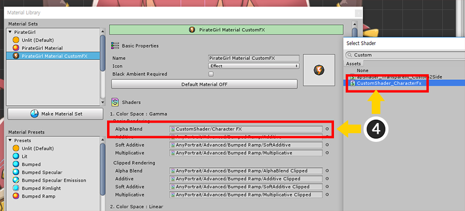
作成したShaderをマテリアルセットに適用します。
条件によって合計16個のShaderをそれぞれ作成して適用するべきなのに、エフェクトマテリアルを作成する場合には、あえてすべての条件に対してShaderを作成する必要がありません。
(4) 作成したShaderを最も基本となる「Gamma Color Space / Basic Rendering / Alpha Blend」に適用します。
このページで使用されてShaderは、次のように作成されました。
プリセットとして提供されている「Bumped Ramp」マテリアルのShaderに若干のコードが追加されたものです。
Shader "CustomShader/Character FX"
{
Properties
{
_Color("2X Color (RGBA Mul)", Color) = (0.5, 0.5, 0.5, 1.0)
_MainTex("Main Texture (RGBA)", 2D) = "white" {}
_BumpMap("Bump Texture (Normalmap)", 2D) = "bump" {}
_RampMap("Ramp Gradient Map (RGB)", 2D) = "white" {}
_NoiseMap("Gray Noise Map (Gray)", 2D) = "white" {}
_FadeValue("Fade Value (0~1)", Float) = 0
_FadeColor1("Fade Color 1 (RGB)", Color) = (0, 0, 0, 1)
_FadeColor2("Fade Color 2 (RGB)", Color) = (1, 1, 0, 1)
}
SubShader
{
Tags{ "RenderType" = "Transparent" "Queue" = "Transparent" "PreviewType" = "Plane" }
Blend SrcAlpha OneMinusSrcAlpha
LOD 200
CGPROGRAM
#pragma surface surf SimpleColor alpha
#pragma target 3.0
half4 _Color;
sampler2D _MainTex;
sampler2D _BumpMap;
sampler2D _RampMap;
// Custom Code
//--------------------------------
sampler2D _NoiseMap;
float _FadeValue;
half4 _FadeColor1;
half4 _FadeColor2;
//--------------------------------
struct Input
{
float2 uv_MainTex;
float2 uv_BumpMap;
float4 color : COLOR;
};
half4 LightingSimpleColor(SurfaceOutput s, half3 lightDir, half atten)
{
half4 c;
half nl = max(0, dot(s.Normal, lightDir));
half halfDiff = (nl * 0.5f) + 0.5f;
half3 rampColor = tex2D(_RampMap, float2(halfDiff, 0.5f)).rgb;
c.rgb = saturate(s.Albedo * _LightColor0.rgb * (rampColor * atten));
c.rgb + s.Emission;
c.a = s.Alpha;
return c;
}
void surf(Input IN, inout SurfaceOutput o)
{
half4 c = tex2D(_MainTex, IN.uv_MainTex);
c.rgb *= _Color.rgb * 2.0f;
o.Alpha = c.a * _Color.a;
o.Albedo = c.rgb;
o.Normal = UnpackNormal(tex2D(_BumpMap, IN.uv_BumpMap));
// Custom Code
//---------------------------------------------------
o.Emission = half4(0, 0, 0, 0);
half noise = tex2D(_NoiseMap, IN.uv_MainTex).r;
if (noise < _FadeValue - 0.03f)
{
o.Alpha = 0.0f;
}
half smoothFade = (noise - _FadeValue) / 0.6f;
if (noise < _FadeValue)
{
o.Emission = _FadeColor2.rgb;
}
else if (noise < _FadeValue + 0.6f)
{
o.Albedo = (o.Albedo * _FadeColor1.rgb) * (1.0f - smoothFade) + o.Albedo * smoothFade;
}
//---------------------------------------------------
}
ENDCG
}
}
このShaderコードに合わせてプロパティを設定してみましょう。

(5) 「Add Property」ボタンを押します。
(6) 新しい「プロパティ」が追加されたことを見ることができます。

(7) プロパティの名前を「_NoiseMap」に設定し、「Texture」タイプに変更します。

(8) このテクスチャは、画像に関係なく共通に適用されるので、「Common Texture」方式に変更します。
(9) 効果のために製作されたノイズテクスチャを適用します。
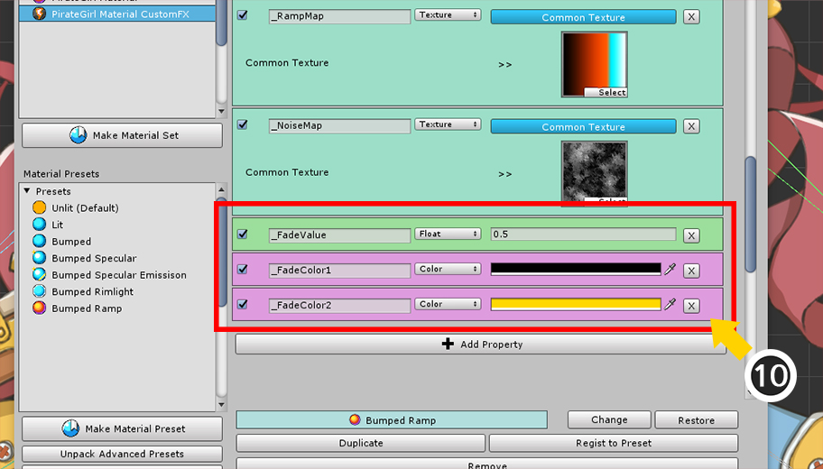
(10) ような方法でFloatタイプの「_FloatValue」、Colorタイプの「_FadeColor1」と「_FadeColor2」プロパティを追加します。
追加されたプロパティに適切な値を設定します。

このマテリアルのセットをレンダリングに適用してみましょう。
(11) マテリアルの「Default Material」の設定をONに変更してBakeを行います。

キャラクターが消えたり、表示される効果を見ることができます。
他のスクリプトを利用して、「_FadeValue」を制御すると、アニメーションされる効果を作成することができます。
実装方法は、下記の例を参考にして見れば良いです。
下の例は、次のように動作します。
- 「Aキー」、「Sキー」が押されると「fadeValue」変数が増加したり、減少します。
- 「SetMeshCustomFloatAll」関数を利用して、材料の「_FadeValue」プロパティの値を「fadeValue」値に更新します。
（関数の詳細については、「関連ページ」を参照してください。）
using UnityEngine;
using AnyPortrait;
public class CharacterFadeTester : MonoBehaviour
{
public apPortrait portrait;
public float fadeValue = 0.5f;
void Update ()
{
if ( Input.GetKey(KeyCode.A) )
{
fadeValue -= Time.deltaTime * 0.5f;
portrait.SetMeshCustomFloatAll(fadeValue, "_FadeValue");
}
if ( Input.GetKey(KeyCode.S) )
{
fadeValue += Time.deltaTime * 0.5f;
portrait.SetMeshCustomFloatAll(fadeValue, "_FadeValue");
}
}
}
このページで説明されたすべてマテリアルを動画でご覧いただけます。
また、このページで説明されたテクスチャは以下の通りです。

リストからプロパティを追加
1.5.1
プロパティを追加するときは、リストで検索して追加できます。
(1) 「Add Property from List」ボタンを押します。
(2) リストからプロパティを選択して簡単に追加できます。
Ctrl （「Mac」では Command ）または Shift を押して、複数のプロパティを選択して追加できます。
参照マテリアルを使用してプロパティを設定
1.5.1
カスタムシェーダのプロパティが多い場合は、マテリアルライブラリで毎日追加して設定するのは不便です。
特に、多くのキャラクターが共通のシェーダを共有している場合、これを毎日行うのは面倒です。
AnyPortrait v1.5.1で追加された機能を使用すると、プロパティを指定するのではなく、特定のマテリアルアセットを参照するように設定することで操作をはるかに簡単にできます。
3つのプロパティが追加されたカスタムシェーダを作成したと仮定して、マテリアルセットを設定しましょう。
(1) 「マテリアルアセット」を作成して選択します。
(2) マテリアルのシェーダをキャラクターに適用されるカスタムシェーダに変更します。
(3) 「_Color」と「_MainTex」以外のカスタムプロパティに値を割り当てます。ここでは、白黒パターンのテクスチャと色とFloat値を設定しました。
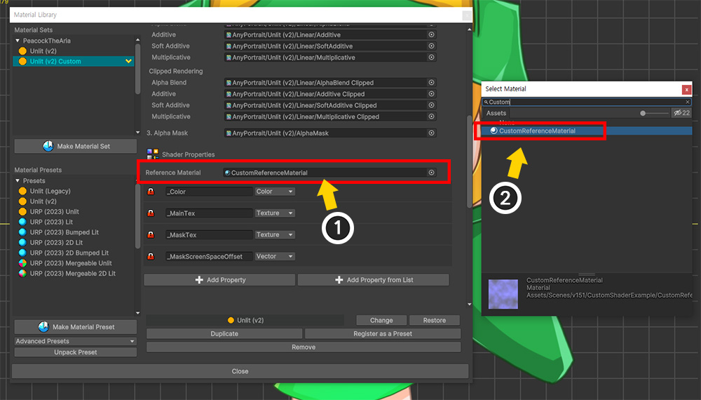
(1) マテリアルライブラリの「Reference Material」項目を選択して、(2) 先に作成したマテリアルアセットを割り当てます。
カスタムプロパティの値は、マテリアルアセットを参照して自動的に設定されます。
「Bake」をしてゲームを実行すると、参照されたマテリアルアセットの値がキャラクターに適用されたことがわかります。
この機能は、多くのキャラクターがカスタムシェーダとプロパティを共有するときに便利です。
ところが、場合によっては、特定のキャラクタに一部のプロパティの値を異なるように割り当てる必要もあるでしょう。
このときは、直接カスタムプロパティを指定すればよい。
(1) マテリアルライブラリから参照マテリアルアセットが割り当てられた状態です。
(2) この状態でカスタムプロパティの一部の値を異なるように設定してみましょう。
「Bake」をしてゲームを実行すると、直接指定したプロパティの値が参照マテリアルの値より優先され、適用されたことがわかります。
メモ
参照マテリアルは、ランタイムではなく「Bake」で参照されます。
したがって、参照マテリアルの値が変わった場合は、そのアセットが適用されたすべてのキャラクターを再び「Bake」する必要があります。
また、実行時に参照マテリアルの値が変わってもキャラクターはこれを認識しません。
プリセットとして保存
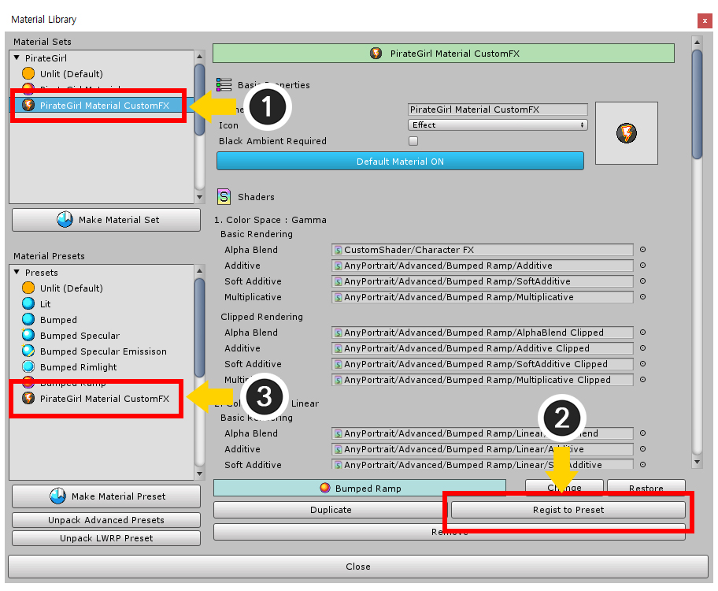
作成したマテリアルセットをプリセットとして作っておけば、他のキャラクターにも迅速にマテリアルを適用することができます。
(1) プリセットとして保存しようとするマテリアルセットを選択します。
(2) 「Register as a Preset」ボタンを押します。
(3) マテリアルセットがプリセットにコピーされ、登録されたことがわかります。
一部のメッシュに他のマテリアルのセットを適用

メッシュを選択して、デフォルト以外のマテリアルのセットを適用することができます。
(1) 「メッシュグループ」を選択します。
(2) 「Settingタブ」を選択します。
(3) 対象となる「メッシュ」を選択します。

(1) 「Use Default Material Set」ボタンを押してOFF状態に変更します。
(2) 「Change」ボタンを押します。
(3) 適用しようとする「マテリアルセット」を選択し、「Select」ボタンを押します。
この段階まで設定すると、マテリアルのセットが適用されます
もしこのメッセージに対してマテリアルセットのプロパティを別の方法で適用したい場合は、次の段階まで実行ください。
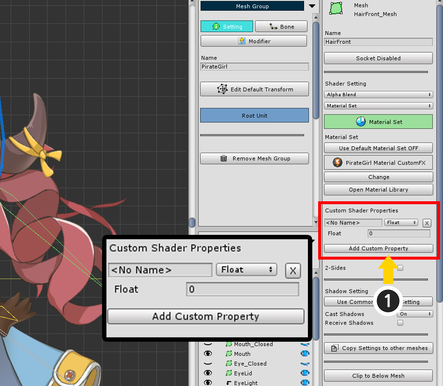
(1) 「Add Custom Property」ボタンを押します。
新しいカスタムプロパティが追加されました。
このプロパティは、マテリアルのセットやCustom Shaderの設定に関係なく、Unityシーンに適用されます。
（マテリアルのセットのプロパティの設定よりも優先されます。）

(2) プロパティの名前とタイプ、値を設定します。
ここに先立ち設定のようColorタイプの「_FadeColor1」に設定しました。

同じように、「_FadeColor2」プロパティも追加しました。
マテリアルセットの設定とは異なる色に設定したので、結果も異なってレンダリングされます。
おそらくマテリアル設定を他のメッシュにも同様に適用する必要があるでしょう。
次の説明をご覧ください。

(1) 「Copy Settings to other meshes」ボタンを押します。
この機能は、メッシュの属性を他のメッシュにコピーする機能であり、マテリアル設定を含む、さまざまな属性を選択的にコピーすることができます。
(2) 属性がコピーされるメッシュを選択します。
(3) ここでマテリアルの設定とカスタムプロパティをコピーしようとするので、「Material Set」と「Custom Material Properties」をチェックします。
(4) 「Apply」ボタンを押します。

BakeをしUnityシーンでレンダリング結果を確認してみると、選択されたメッシュだけマテリアルが異なって適用されたことを見ることができます。
マテリアルライブラリのインターフェイス

1. マテリアルセットリスト
: キャラクターに適用することができるマテリアルのセットがあり、新しいマテリアルのセットを生成することができる「Make Material Set」ボタンがあります。
2. プリセットリスト
: 「マテリアルセットプリセット」があります。そしてプリセットを作成するためのボタンがあります。
- Make Material Preset : 新しいプリセットを作成します。
- Unpack Advanced Presets : 上記で紹介された様々なマテリアルが含まれているパッケージをインストールして、プリセットを追加します。
- Unpack LWRP Preset : Lightweight Render Pipeline（LWRP）のマテリアル1種を含むパッケージをインストールします。
3. マテリアル編集機能
: 選択されたマテリアルセットを編集する機能です。
- 接続されたプリセットとChange、Restoreボタン：このマテリアルセットがプリセットがない場合は、プリセットと連動することができます。 「Change」ボタンを押して、他のプリセットを選択して接続することができ、「Restore」ボタンを押してプリセットと同じ値を持つように同期させることができます。
- Duplicate : 選択されたマテリアルのセットを複製します。
- Register as a Preset : このマテリアルセットをプリセットとして登録します。
- Remove : このマテリアルのセットを削除します。デフォルトの「Unlit」プリセットは削除できません。
1. 名前、アイコン、Ambient色
: マテリアルセットの名前とアイコンタイプです。このマテリアルセットが「黒のAmbient」を必要とするチェックすると、Bake時「Ambient色」に基づいて案内メッセージが表示されます。
2. アイコン画像
3. Default Material設定
: マテリアルセットをデフォルトに設定すると、別の設定がないすべてのメッシュに自動的にマテリアルセットが適用されます。
4. Shaderアセット
: カラースペース、クリッピングするかどうか、ブレンドタイプに応じて詳細にどのようなShaderアセットを適用するかを設定します。
5. スケジュールされたプロパティ
: AnyPortraitで使用される4つのプロパティです。このプロパティは、ユーザーが制御することはできません。
6. 画像ごとに指定されたテクスチャプロパティ
: 画像ごとにそれぞれのテクスチャを設定することができます。 「Texture per Image」ボタンを押して変更することができます。
7. 共通テクスチャプロパティ
: 画像に関係なく、1つのテクスチャをプロパティで指定します。 「Common Texture」ボタンを押して変更することができます。
8. Float、Int、Vector、Colorタイプのプロパティ
: テクスチャではなく、タイプのプロパティです。左から、次のような要素があります。
- アクティブ/アクティブチェックボックス : このチェックボックスをオフにするとBakeには適用されません。
- 名前 : プロパティの名前であり、同じ名前がShaderにする必要があり適用されます。
- タイプ : プロパティのタイプです。 「Float、Int、Vector、Color、Texture」タイプをサポートします。
- 値 : プロパティの値です。
- 削除ボタン : プロパティを削除します。
9. Add Property
: プロパティを追加します。

プリセットのシェーダーアセットの欠落のトラブルシューティング
1.5.0
プロジェクト内のアセットを別のパスに移動すると、マテリアルプリセットのシェーダーアセットが欠落しているという問題が発生する可能性があります。
この問題を簡単に解決するための機能を紹介します。
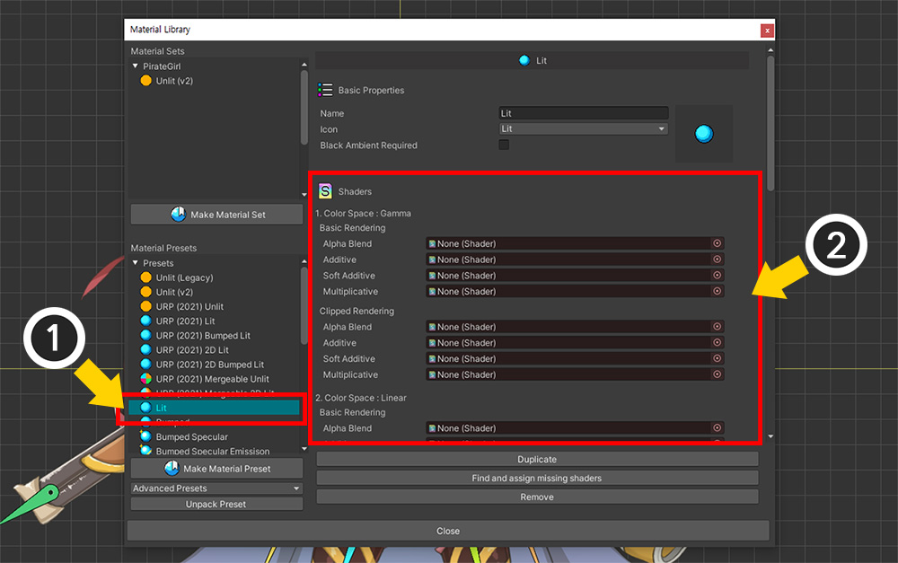
上の画面は、インストールされたマテリアルプリセットのシェーダーアセットがプロジェクト内の他のパスに移動した後の状態です。
(1) プリセットを選択してみましょう。
(2) シェーダーアセットが削除されたわけではありませんが、パスが変わってシェーダーアセットが欠落してしまった状態です。
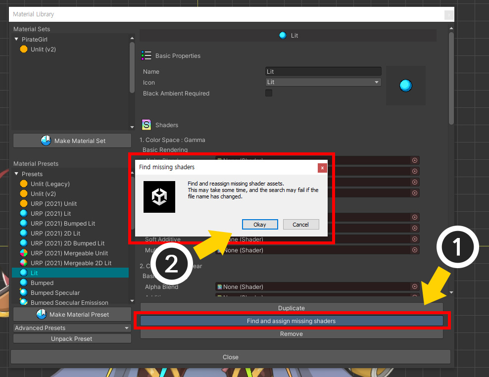
(1) 「Find and assign missing shaders」ボタンを押します。
(2) ファイル名に基づいて検索した後、アセットを再割り当てするように求められます。 Okayボタンを押します。
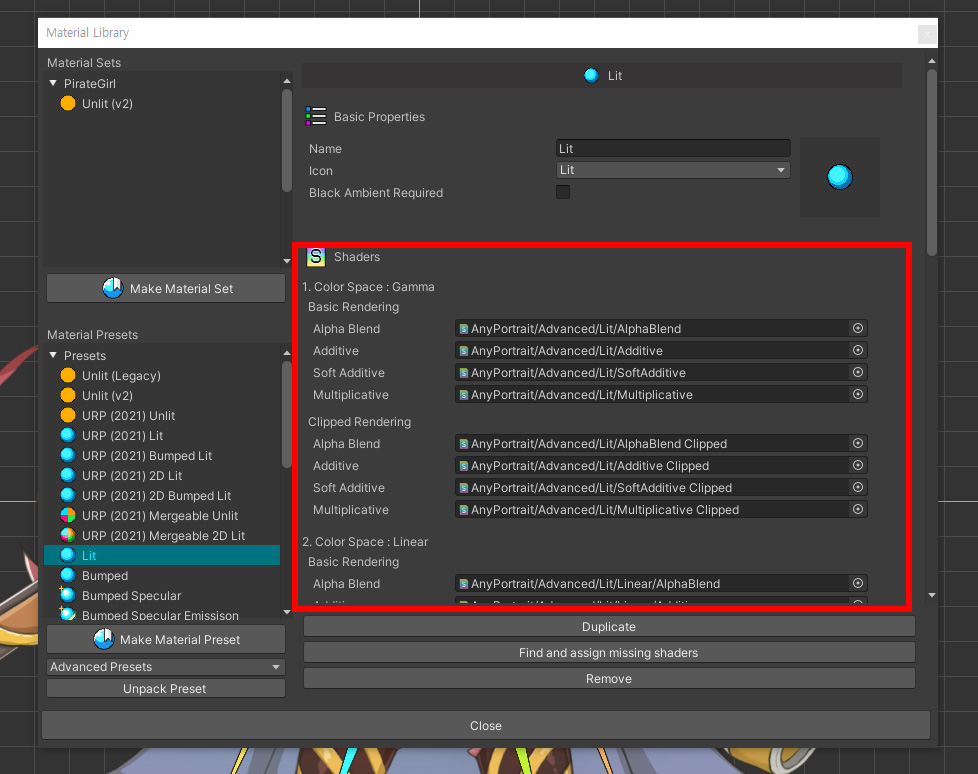
欠落しているシェーダーアセットが再び正常に割り当てられていることがわかります。
キーワードタイプのプロパティ
1.5.1
AnyPortrait v1.5.1で「キーワード(Keyword)」をカスタムプロパティとして制御できるようになりました。
キーワードを活用するカスタムシェーダの作成方法は、関連ページを参照してください。

(1) カスタムプロパティを「Keyword」タイプに変更した後、「Enable」または「Disable」に設定してキーワードを使用するかどうかを決定します。
キーワードが多い場合は、プロパティオプションを毎日設定するのが面倒なので、上記のように設定するのが便利です。
(1) 「Add Property from List」ボタンを押します。
(2) 一般的なプロパティとともに、「キーワード」もリストに表示されることがわかります。ここで選択して追加すると簡単に設定できます。
マテリアルプリセットv16
1.6.0
「AnyPortrait v1.6.0」で「マスク」（関連ページ）機能が改善され、クリッピングシェーダコードが大幅に変更されました。
これらの変更点により、従来提供されていたほとんどのマテリアルプリセットが新しく作成されました。
「AnyPortrait v1.6.0」で追加されたマテリアルは「v16」と命名され、以前のマテリアルは「Legacy」と分類されます。
マテリアルプリセットパッケージのリストには、「Legacy」の下に以前のパッケージが表示され、「Legacy」以外のパッケージは、新しく追加された「v16マテリアル」を意味します。
(1) 新しく追加されたマテリアルプリセットに「v16」が付いているか「Legacy」がないプリセットは、新しく追加された「v16マテリアルプリセット」を意味します。
(2) このマテリアルプリセットの「予約済みプロパティ（Reserved Properties）」項目には、強化された「マスク」機能のための新規プロパティが多数追加されました。
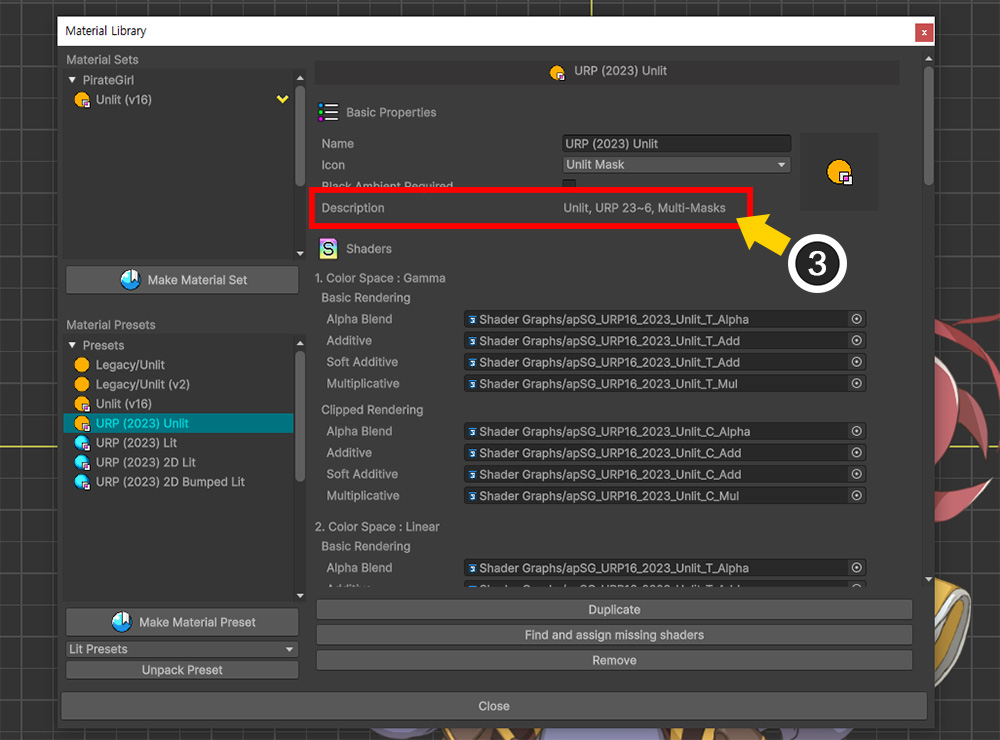
(3) また、マテリアルプリセットの性格を簡単に知るために、「Description」項目がUIに追加されました。
このトピックでは、「Multi-Masks」キーワードを付けたマテリアルプリセットが強化された「マスク」機能をサポートします。